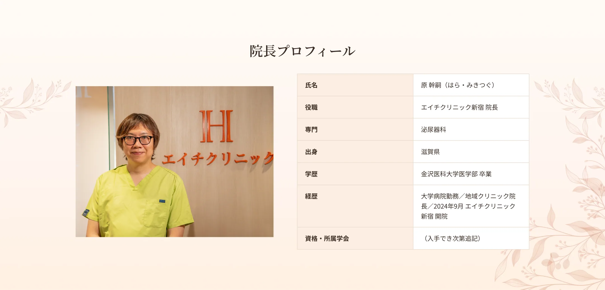
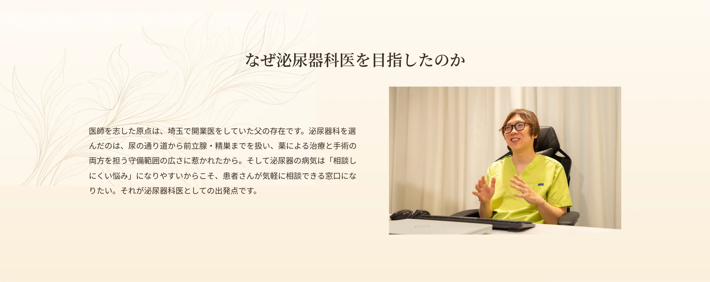
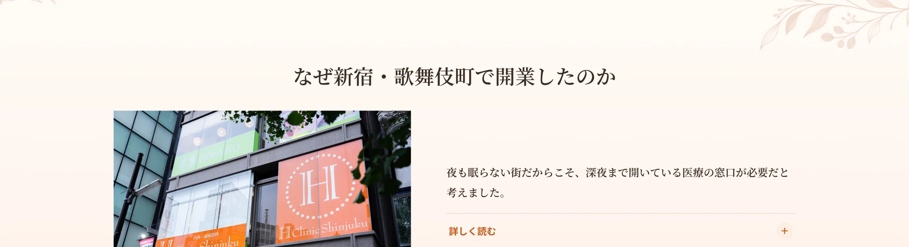
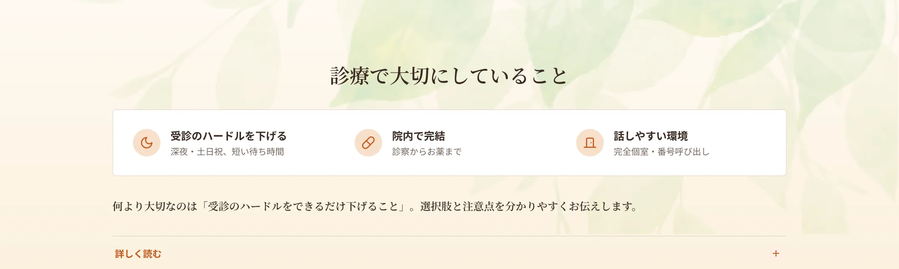
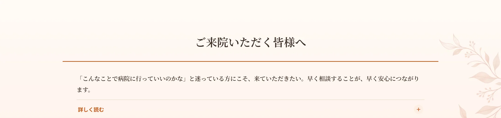

新宿駅から徒歩6分、歌舞伎町にあるエイチクリニック新宿で院長を務める原幹嗣（はら・みきつぐ）です。泌尿器科医として大学病院や地域のクリニックで診療に携わってきた経験をもとに、2024年9月、この街に内科・泌尿器科のクリニックを開きました。夜遅くまで働く方、生活のリズムが不規則な方、人に相談しにくい悩みを抱える方が、ためらわずに受診できる場所をつくりたい。その思いで、日々の診療にあたっています。



勤務医として経験を積むなかで、患者さん一人ひとりとじっくり向き合える医療を自分の手で形にしたいという思いが強くなりました。新宿・歌舞伎町は、日本でも有数の、夜も眠らない街です。飲食や接客、夜間勤務など、一般的な病院の診療時間に合わせることが難しい方が大勢働いています。体調を崩しても「開いている病院がない」と我慢してしまう方が多いこの街だからこそ、深夜まで開いている医療の窓口が必要だと考えました。また、泌尿器のトラブルや性感染症は、人の行き交う繁華街でこそ相談のニーズが高い分野です。泌尿器科医としての専門性を最も生かせる場所が、ここ新宿・歌舞伎町でした。※開業地を選んだ理由（地域性の部分）は公開情報から構成した内容です。院長にご確認ください。

私が診療で何より大切にしているのは、「受診のハードルをできるだけ下げること」です。どれだけ良い医療を用意しても、来ていただけなければ役に立てません。そのため当院では、深夜23時30分まで・土日祝も診療し、予約枠を細かく設けて待ち時間を短くしています。院内で診察からお薬のお渡しまで完結できるので、薬局が閉まった時間でもその日のうちに治療を始められます。また、デリケートな悩みを安心して話していただけるよう、完全個室・呼び出し番号制を採用し、ほかの患者さんと顔を合わせにくい環境を整えました。診察では、症状だけでなく、お仕事や生活の事情にも耳を傾けたうえで、検査や治療の選択肢とそれぞれのメリット・注意点をわかりやすくお伝えします。自費診療の薬ひとつにしても、体への影響や安全な使い方を理解していただいてから始めることを大切にしています。

「こんなことで病院に行っていいのかな」「恥ずかしくて誰にも言えない」そう迷っている方にこそ、当院に来ていただきたいと思っています。排尿の違和感や、なかなか引かない熱、性感染症の不安など、どんなことでも、まずは話してみてください。早く相談していただくことが、早く安心につながる一番の近道です。これからは、泌尿器科の診療体制をさらに充実させていく予定です。血尿など、見過ごすと重い病気につながる症状をきちんと見極められるよう、検査機器を少しずつ整えています。同じビル内の歯科とも連携し、口の中の健康と全身の健康の両面から皆様を支えていきたいと考えています。「早く来て、早く帰れる」。仕事の前後や予定の合間に、気軽に立ち寄っていただけるクリニックでありたいと思います。新宿で働く方、暮らす方、訪れる方の身近なかかりつけとして、スタッフ一同、心よりお待ちしております。エイチクリニック新宿 院長 原 幹嗣